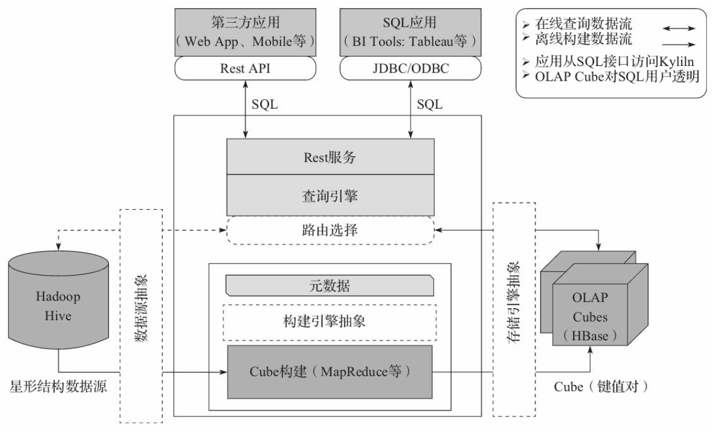

Apache Kylin™是一个开源的分布式分析引擎
Apache Kylin™是一个开源的分布式分析引擎，提供Hadoop/Spark之上的SQL查询接口及多维分析（OLAP）能力以支持超大规模数据，最初由eBay Inc.
开发并贡献至开源社区。它能在亚秒内查询巨大的Hive表。

特性
Kylin是为减少在Hadoop上百亿规模数据查询延迟而设计
Kylin为Hadoop提供标准SQL支持大部分查询功能
通过Kylin，用户可以与Hadoop数据进行亚秒级交互，在同样的数据集上提供比Hive更好的性能
用户能够在Kylin里为百亿以上数据集定义数据模型并构建立方体
Kylin提供与BI工具，如Tableau，的整合能力，即将提供对其他工具的整合
其他特性:
Job管理与监控
压缩与编码
增量更新
利用HBase Coprocessor
基于HyperLogLog的Dinstinc Count近似算法
友好的web界面以管理，监控和使用立方体
项目及立方体级别的访问控制安全
支持LDAP
2014年的9月底，Kylin平台在eBay内部正式上线。
2014年10月1日，项目负责人韩卿将Kylin的源代码提交到github.com并正式开源